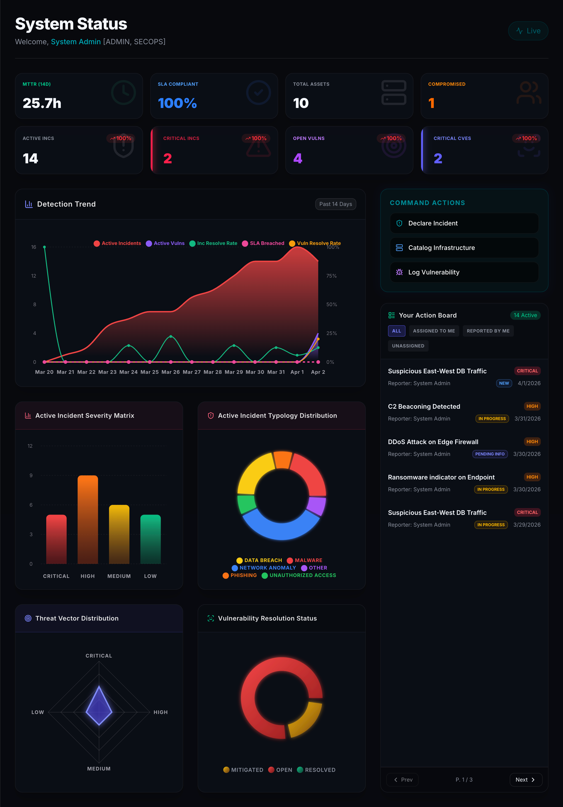
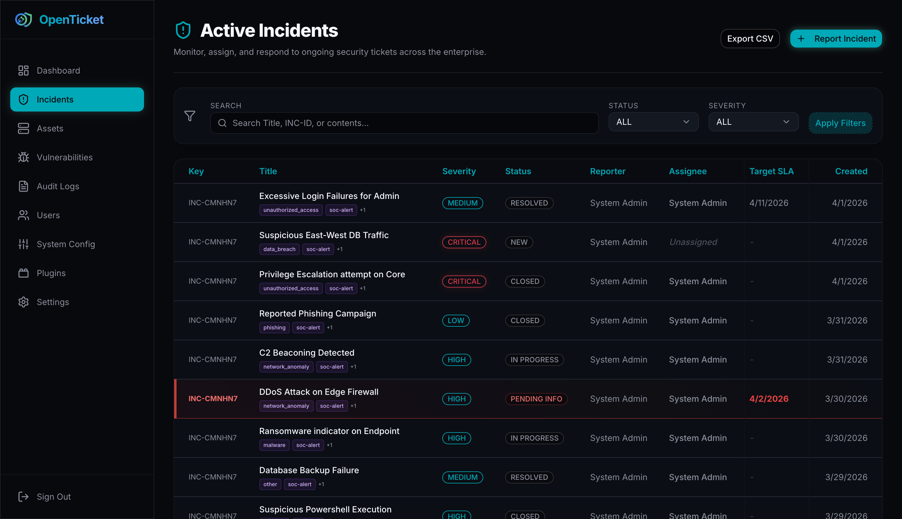
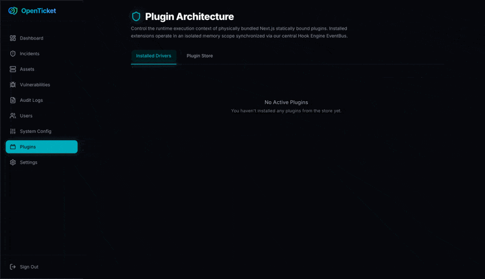

An enterprise-grade platform unifying incident tracking, machine-to-machine integrations, and real-time collaboration. Automate responses, track SLAs, and take control of your SOC.

Everything you need to orchestrate security workflows in one highly customizable platform.
Visually assess your organizational risk through dynamic, real-time radar charting of active vulnerabilities spanning CRITICAL to LOW severities.

Configurable resolution timelines ensure high-priority incidents never slip through the cracks, complete with automated escalation.
A decoupled event-bus architecture routing onIncidentCreated and onAssetCompromise
logic across your entire SOC perimeter.
Build and configure your own native integrations inside the Next.js runtime. Manage all SOAR extensions in a unified registry and write custom triggers to connect securely with your external APIs.

Power your automation flawlessly with our anti-enumeration ApiToken engine generating secure SHA-256 Bearer authentications for SOAR/SIEM integration logic.
curl -X POST https://soc.openticket.local/api/incidents \
-H "Authorization: Bearer ot_secv2_ab12c3" \
-H "Content-Type: application/json" \
-d '{
"title": "Suspicious SSH Login",
"severity": "HIGH",
"type": "UNAUTHORIZED_ACCESS"
}'Join the open-source movement redefining security response.
View on GitHub